告白

诺亚与雷尔提斯之间第一次比较正式的告白。
发生在进入长夜以前，在那时候......他们一定不会知道自己以后会迎来甚么样的命运吧。
(点击详情展开，共9P)
救世主的故事会流传千古，但这段不为人知的爱情只有你当见证。
诺亚与雷尔提斯之间第一次比较正式的告白。
发生在进入长夜以前，在那时候......他们一定不会知道自己以后会迎来甚么样的命运吧。
(点击详情展开，共9P)
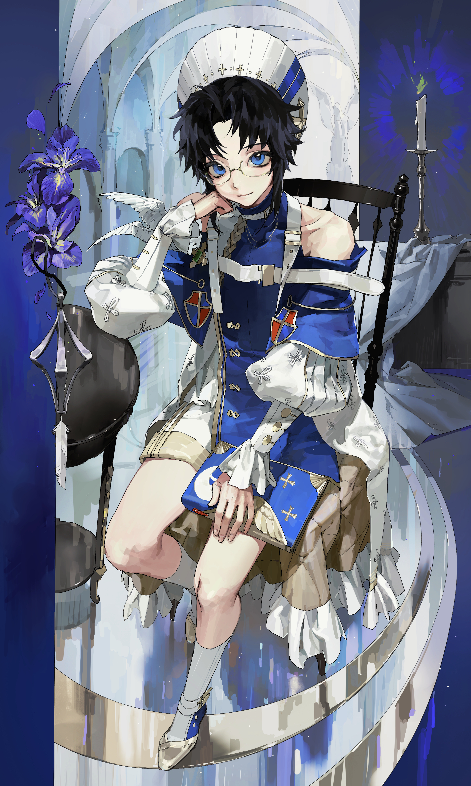
诺亚总是擅长于把所有事情完成得漂亮，他很聪明——而更难能可貴的是，他还足够听话。
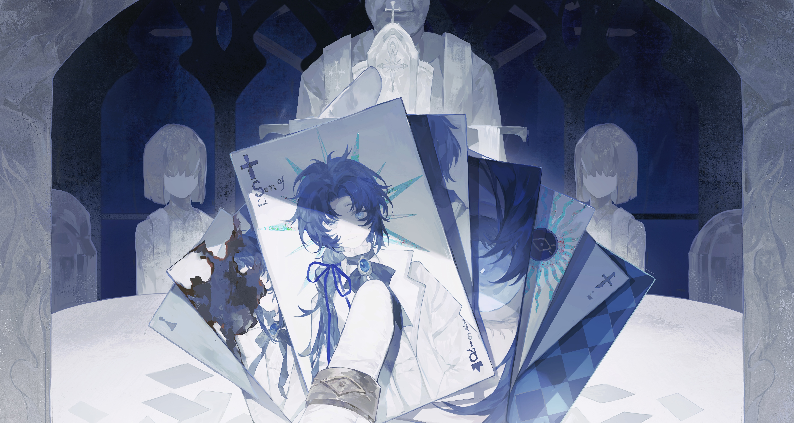
他自小在教会中长大，被养成为圣子、一匹注定要为主的复活而被献祭的羔羊。
从来没有谁问过他的意见，或体察过的他的想法。
当掌权者把他当成一张手牌时，他便安静地、静静地在暗地里凝视着牌手。
——一直到恨意点燃心房，他拥有能颠覆牌桌的能力为止。
]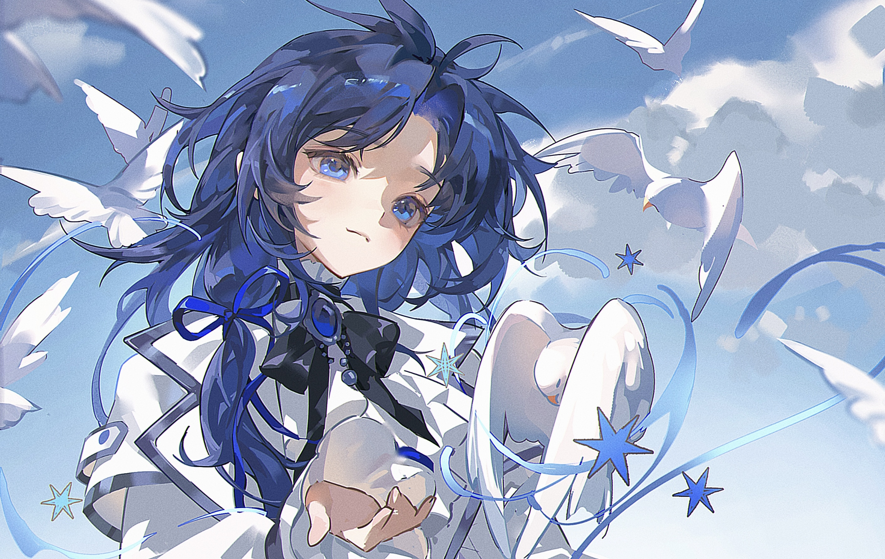
只能在教会中活动的圣子曾經捡到过一只受伤的飞鸟，他替它包扎、治疗，看着那小小的生命在掌心上恢复力气，最终振翅而起，一往無前地飞向天空。
多年之后，诺亚才终于愿意承认——他也羡慕过那只远走高飞的飞鸟。正如他终于看清自己那颗被信仰与家族层层掩埋的真心，始终在悄然無息地呼喚自由。
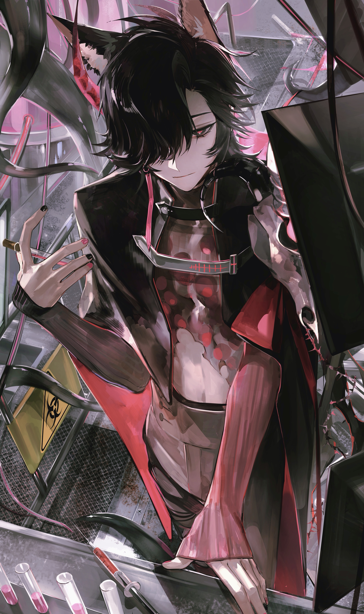
它在当时并没有被视为一个「及格」的概念体——哪怕作战能力非凡，但该概念体无法稳妥控制自己的能力，这让它成为了风险、一个在战场上会随时炸开的不定时炸弹。
它只被允许派遣去已封锁的高危地区执行任务，通常是自杀式任务。没有人太在意它能否活着回来，因为一次性工具只用一次就足够。
而令部门意想不到的是，它活下来了不仅一次——一直到它终于在生死之间，彻底学会了如何控制好自己的能力为止。
从那时开始，研究人员才于档案上正式记录下它的名字。
「雷尔提斯」。
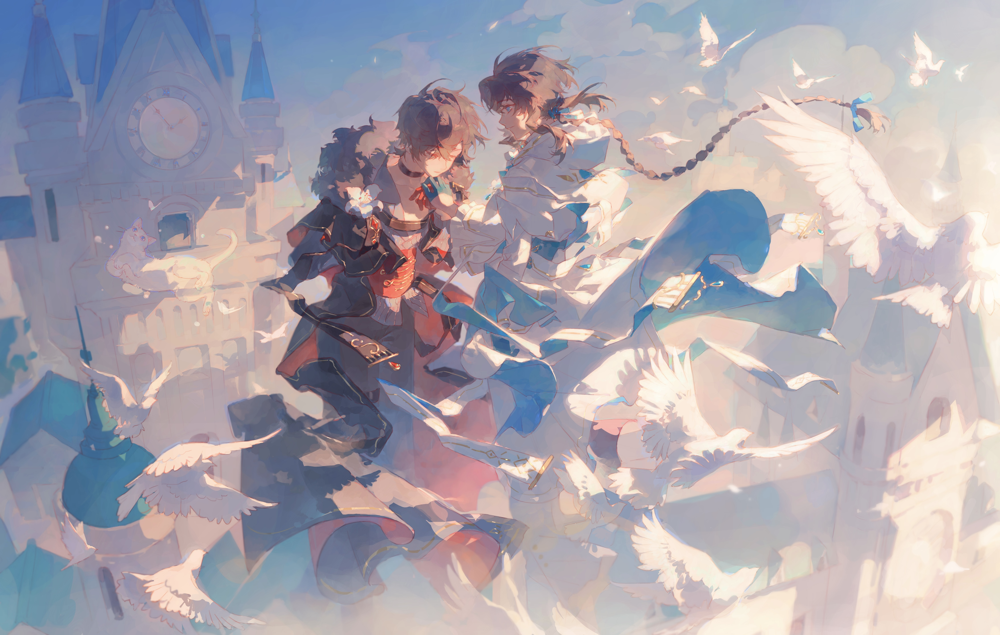
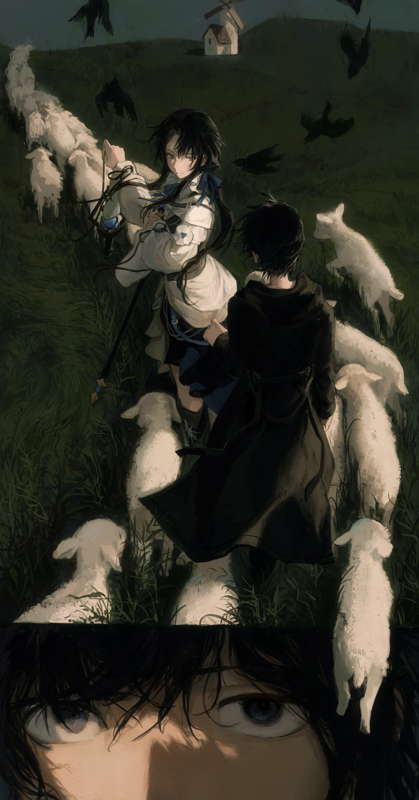
他的容貌映在你漆黑的眼中，像一盞明燈。
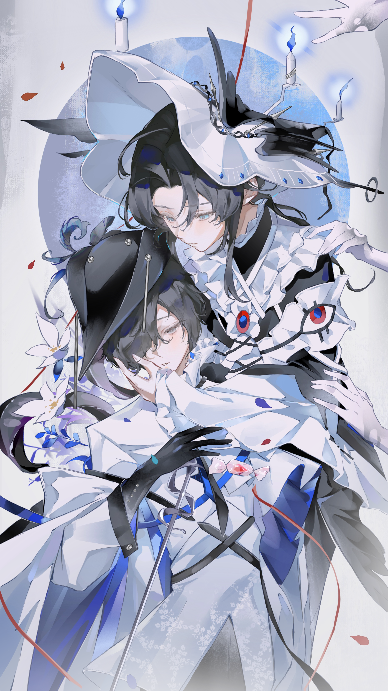
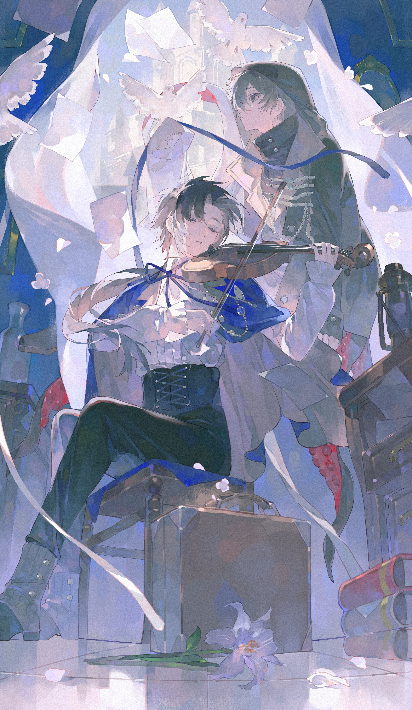
把自己最爱的音乐，奏予自己最爱的人。
这一曲只奏给你听。
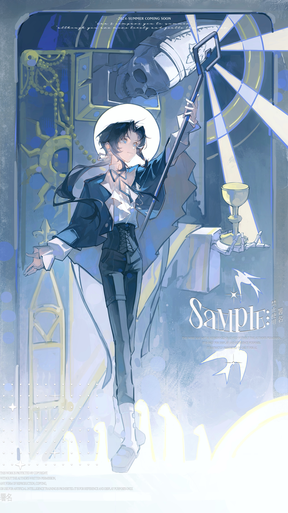
当本应神圣的教权开始腐朽，当无人再敢做正确的事，当主不在场......
你在。
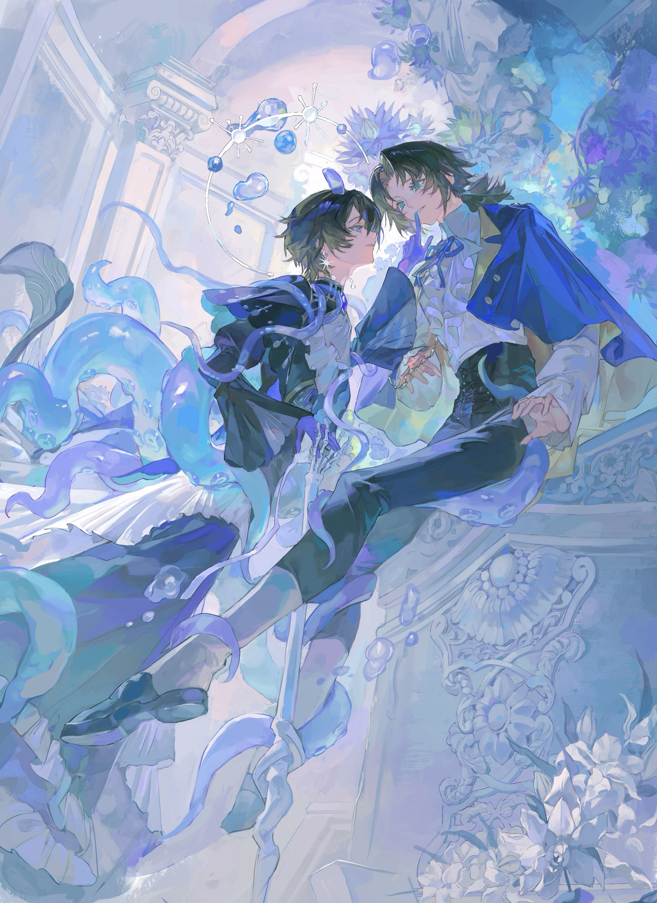
你身上有情欲的味道......那与海水的气味近似。
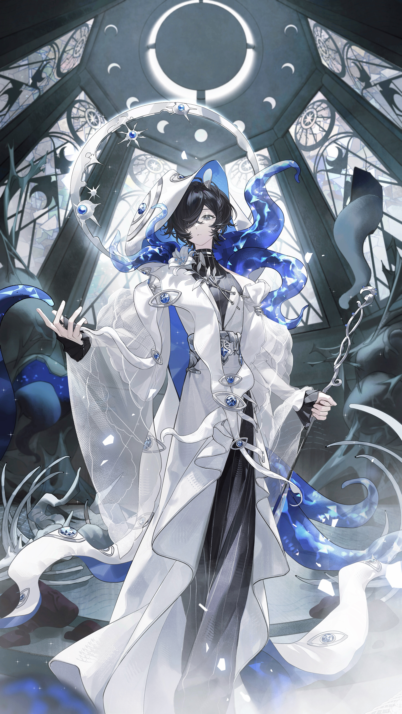
两人一起前往混沌地带进行调查，然后雷尔提斯中途冒充为了某个名为「日月之径」的教派中的大祭司……的故事？！
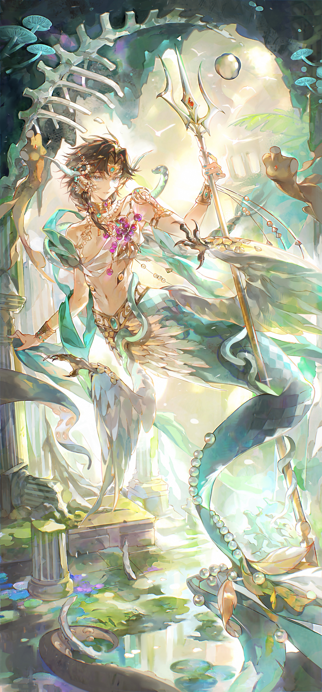
能在万里下的海底建出一座无人见了能不赞叹的城市，用魔法在漆黑的海水中亮起通明灯火——哪怕是曾經这样辉煌的人鱼文明，最终也埋没在了长夜中。
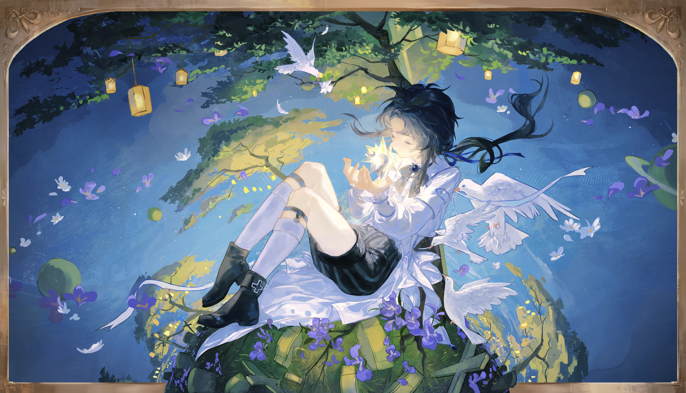
属于你的，那枚最独一无二的、黑漆漆的星星。
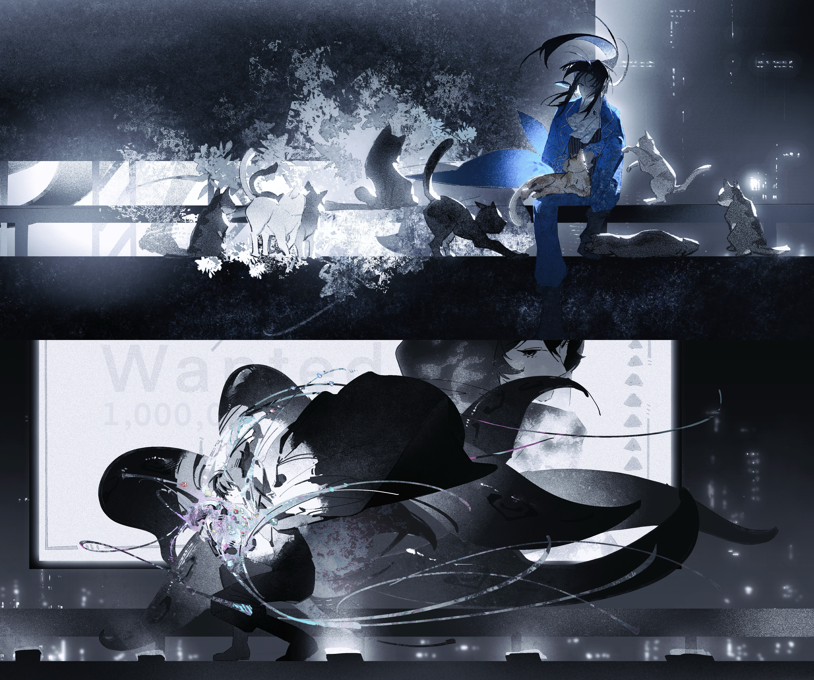
可以出风头的机会就交给雷尔提斯好了。
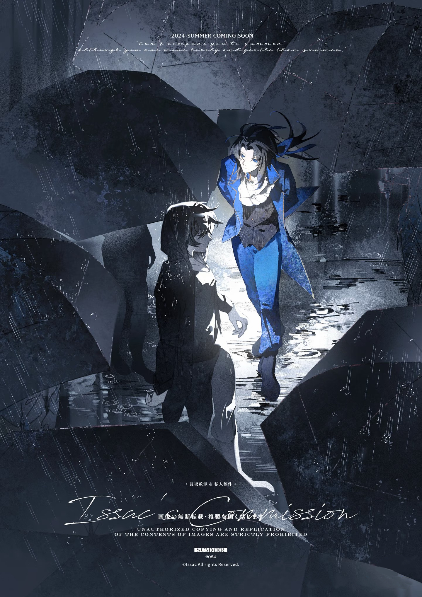
像夜里的提灯，海上的灯塔……所以视线忍不住就会聚焦向你。
仔细一想，明明你总是一副黑漆漆的样子。
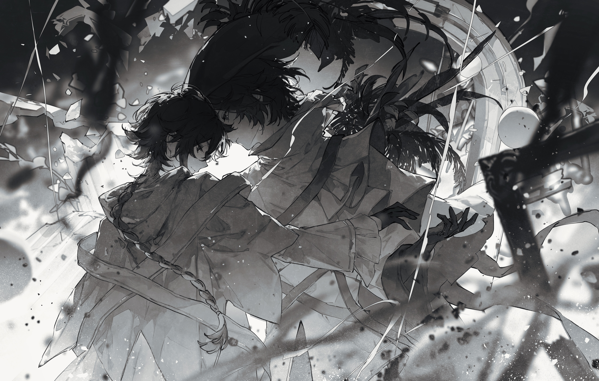
如果一切可以重来，那么这次我们就不再去拯救世界。
等世界迎来末日时，当天空大地与万物开始崩塌……我会与你静静地待在一起。')

中式克鲁苏AU的服装设计融合了中国古代神话元素和克苏鲁风格的超自然特质，创造出既有东方韵味又带有神秘恐怖气息的独特视觉效果。设计灵感来源于中国古代神话、道教服饰和克苏鲁神话中的非欧几里得几何美学。
作为冥界神官，观莲使的服装以黑色和暗红色为主，长袍采用多层叠加的设计，外层是半透明的黑色丝绸，内层是深红色的织物，上面绣有莲花和骨纹图案。这些图案在特定的光线下会发出微弱的磷光，仿佛有生命一般流动。
他的头饰是一顶黑色高冠，上面镶嵌着骨质装饰，形状扭曲而不符合常规几何学。腰间悬挂着一串由特殊材质制成的骨片，每一片上都刻有不同的符文，用于各种冥界仪式。最重要的是他手中的骨镜，这是一面由神骨制成的镜子，边缘装饰着复杂的雕刻，能够照见生死两界。
作为人间的高官，照灵君的服装以白色和金色为主，展现出华贵和权威。他穿着精致的官服，外层是白色的长袍，上面绣有金线勾勒的云纹和光芒图案，象征着他照亮世界的使命。内层是淡金色的丝绸，质地轻盈如云。
他的头冠是金色的，形状如同光芒四射的太阳，上面镶嵌着各种宝石，每一颗都代表着他拯救的一个灵魂。腰间佩戴着一块玉佩，上面刻有"照灵"二字，是他身份的象征。他的靴子是白色的，但总是沾染着尘土，表明他经常行走在人间的各个角落。
观莲使的黑色和暗红色象征着冥界的神秘和死亡的威严，同时也代表着他对生命的尊重和对灵魂的守护。
照灵君的白色和金色象征着光明和希望，代表着他照亮人世的使命，以及他作为救世主的神圣地位。
两人的服装都融入了非欧几里得几何元素，某些图案和装饰看起来似乎违背了常规的空间法则，给人一种超越现实的感觉，这是克苏鲁风格的体现。同时，服装上的符文和图案也包含了中国古代道教和佛教的元素，创造出独特的东方神秘主义氛围。